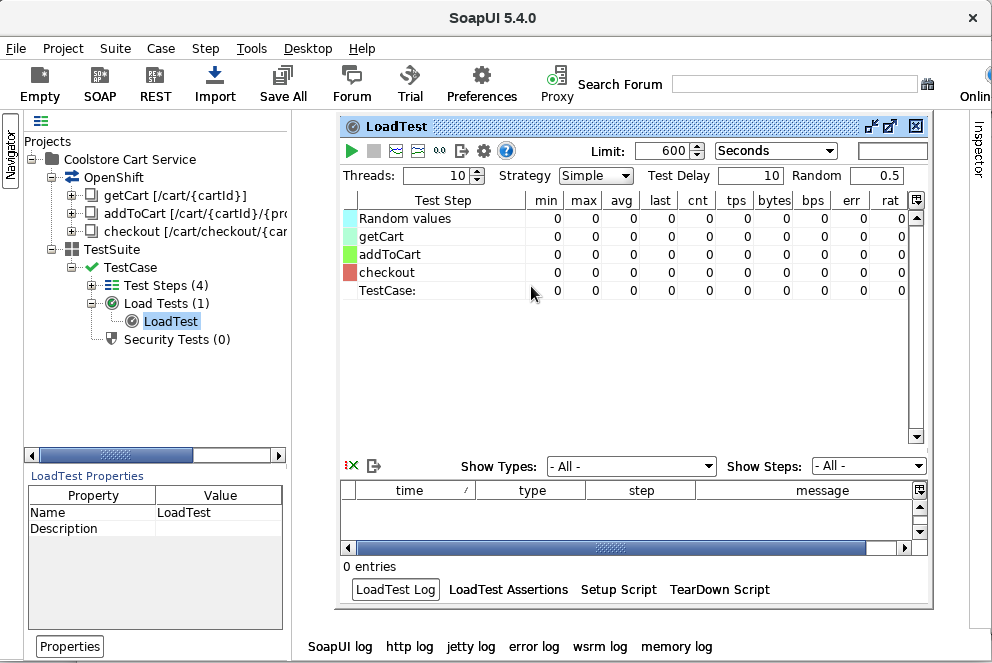

Monitoring Lab
Application performance monitoring is essential to be able to assert that your applications work and perform as expected and deliver the expected business value.
There are numerous tools and products on the market that provide monitoring capabilities at infrastructure and application level, both open-source and proprietary.
Prometheus (https://prometheus.io) is rapidly gaining traction as the open-source monitoring tool for cloud-native applications. Prometheus will be integrated into OpenShift to provide cluster-wide monitoring capabilities at the infrastructure level, but it is equally well suited for application-level monitoring.
The central component of Prometheus is the Prometheus server. The Prometheus server scrapes targets at a configurable interval to collect metrics from specific targets and store them in a time-series database. Targets—the systems or applications that need to be monitored-- typically expose an HTTP endpoint providing metrics. Prometheus has a wide range of service discovery options to find the target services and start retrieving metrics from them, including integration with OpenShift/Kubernetes.
The data gathered and stored by the Prometheus server can be queried using the PromQL language. The Prometheus UI has some limited capacities to show graphs from the collected metrics. Prometheus is often used together with Grafana (https://grafana.com) to provide dashboards on top of the metrics collected by Prometheus.
This diagram illustrates the architecture of Prometheus and some of its ecosystem components:

In many cases, application needs to be instrumented to provide business relevant metrics. Dropwizard Metrics (http://metrics.dropwizard.io) is a widely used Java library used to generate metrics inside an application.
In this lab, you use Dropwizard Metrics to instrument the microservices that make up the Coolstore application, and export the metrics as Prometheus endpoints. You use Prometheus Server to collect the data, and Grafana to build dashboards from the collected metrics.
-
Enhance the code and configuration of the applications to expose metrics
-
Install Prometheus and Grafana on OpenShift
-
Collect metric data from the applications and build dashboards on Grafana
-
Successful implementation and deployment of the catalog, inventory, cart and gateway service microservice applications
|
Note
|
The labs in this module use the original application code as starting point, without the modifications added by the previous labs. Before starting the lab, make fresh clones of the lab source code material and redeploy the different microservice applications using the Fabric8 Maven plugin. Alternatively, create separate branches in the lab source code for the different labs. |
1. Instrument Cart Service Spring Boot Application
1.1. Instrument Application Code with Dropwizard Metrics
-
If not done yet, make a fresh clone of the cart service application code.
-
In the
pom.xmlfile of the project, add a dependency to the Dropwizard Metrics core library:<dependency> <groupId>io.dropwizard.metrics</groupId> <artifactId>metrics-core</artifactId> </dependency>-
You do not have to specify the version as it is managed by the
spring-boot-dependenciesBOM.
-
-
In the
CartEndpointclass in thecom.redhat.coolstore.cart.restpackage, inject the DropWizardMetricRegistryinstance.@Autowired private MetricRegistry metricRegistry;-
The
MetricRegistryclass is the collection of all the metrics for the application. -
The Spring Boot auto-configuration mechanism automatically configures a
MetricRegistryinstance if the Dropwizard’s metrics and Spring Boot Actuator libraries are on the classpath.
-
-
Create timers for the different REST endpoints defined in the
CartEndpointclass.private Timer getCartTimer; private Timer addToCartTimer; private Timer checkoutCartTimer; @PostConstruct public void init() { getCartTimer = metricRegistry.timer("CartService_getCart"); addToCartTimer = metricRegistry.timer("CartService_addToCart"); checkoutCartTimer = metricRegistry.timer("CartService_checkoutCart"); }-
a Dropwizard
Timeris a compound metrics type, consisting of a histogram of the duration of an event and a meter of the rate of its occurrence. A Histogram measures the distribution of values in a stream of data. Histogram metrics allow you to measure not just easy things like the min, mean, max, and standard deviation of values, but also quantiles like the median or 95th percentile. A meter measures the rate at which a set of events occur. See the Dropwizard Metrics documentation for more information. -
Methods in Spring components annotated with
@PostConstructare executed after injection of autowired dependencies.
-
-
Instrument the
getCartmethod to record execution time metrics in thegetCartTimerTimer.@GET @Path("/{cartId}") @Produces(MediaType.APPLICATION_JSON) public ShoppingCart getCart(@PathParam("cartId") String cartId) { Timer.Context timer = getCartTimer.time(); try { return shoppingCartService.getShoppingCart(cartId); } finally { timer.stop(); } } -
Repeat with the
checkout,addanddeletemethods. Use theaddToCartTimertimer for both theaddanddeletemethods.
1.2. Export Metrics For Prometheus
The next step is to expose the metrics collected by the DropWizard Metrics library as an HTTP endoint for scraping by Prometheus. Prometheus expects the data in its own format. Prometheus comes with an exporter for Dropwizard, which allows to export metrics generated by Dropwizard as Prometheus compatible data streams.
-
In the
pom.xmlfile of the project, add dependencies to the Prometheus libraries:<dependency> <groupId>io.prometheus</groupId> <artifactId>simpleclient_spring_boot</artifactId> <version>0.2.0</version> </dependency> <dependency> <groupId>io.prometheus</groupId> <artifactId>simpleclient_dropwizard</artifactId> <version>0.2.0</version> </dependency> <dependency> <groupId>io.prometheus</groupId> <artifactId>simpleclient_hotspot</artifactId> <version>0.2.0</version> </dependency>-
The
simpleclient_spring_bootlibrary provides integration between Spring Boot and Prometheus. Public metrics generated by Spring Boot Actuator are transformed into Prometheus format. When using Spring MVC—which is not the case in the cart service application—a Prometheus HTTP endpoint is automatically configured. -
The simpleclient_dropwizard library provides integration between Prometheus and Dropwizard metrics.
-
The simpleclient_hotspot library allows to collect and export metrics about the JVM—memory pools, threads, garbage collection etc…
-
-
In the
com.redhat.coolstore.cartpackage, create a classPrometheusConfiguration. Annotate the class with the Spring@Componentannotation. -
Inject the Dropwizard
MetricRegistryinstance with the Spring@Autowiredannotation. -
Add an initialization method annotated with
@PostConstructto configure the Prometheus exporters.@Configuration public class PrometheusConfiguration { @Autowired private MetricRegistry dropwizardMetricRegistry; @PostConstruct public void registerPrometheusExporters() { CollectorRegistry.defaultRegistry.clear(); new StandardExports().register(); new MemoryPoolsExports().register(); new DropwizardExports(dropwizardMetricRegistry).register(); } }-
StandardExportscollects and exports common data about the OS, CPU, memory. -
MemoryPoolExportscollects and exports metrics about the JVM memory pools. -
DropwizardExportsexports metrics collected through a DropWizardMetricRegistry.
-
-
Add a REST endpoint to expose the Prometheus data stream. In the
com.redhat.coolstore.restpackage create a classPrometheusEndpoint. Annotate the class with@Componentand@Pathannotations. Set the path to"/metrics". -
In the
PrometheusEndpointclass, add aexportmethod. Expose the endpoint over GET and path "/". -
Implement the method as follows:
@GET @Path("/") public Response export() { String result = writeRegistry(); return Response.ok(result, TextFormat.CONTENT_TYPE_004).build(); } private String writeRegistry() { try { Writer writer = new StringWriter(); TextFormat.write004(writer, CollectorRegistry.defaultRegistry.metricFamilySamples()); return writer.toString(); } catch (IOException e) { // This actually never happens since StringWriter::write() doesn't throw any IOException throw new RuntimeException("Writing metrics failed", e); } }-
Prometheus HTTP endpoints expect data as plain text. The MIME type is
text/plain; version=0.0.4; charset=utf-8.version=0.0.4is the version of the Prometheus data format. -
CollectorRegistry.defaultRegistry.metricFamilySamples()collects the data of all configured exporters.
-
1.3. Deploy And Test
Next step is to deploy the application to OpenShift to test the Prometheus endpoint.
-
Deploy the cart service application to OpenShift with the Fabric8 Maven plugin. Note that the cart service requires the catalog service, so make sure the catalog service is deployed and running in your OpenShift environment.
$ export CART_PRJ=<OpenShift cart service project name> $ mvn clean fabric8:deploy -Popenshift -DskipTests=true -Dfabric8.namespace=$CART_PRJ -
In the OpenShift Web Console, navigate to the pod running the cart service application. Click on the
Terminaltab to open a terminal to the pod. In the terminal, execute the following command:$ curl localhost:8080/metricsSample Output# HELP jvm_memory_bytes_used Used bytes of a given JVM memory area. # TYPE jvm_memory_bytes_used gauge jvm_memory_bytes_used{area="heap",} 9.2088688E7 jvm_memory_bytes_used{area="nonheap",} 6.6234328E7 # HELP jvm_memory_bytes_committed Committed (bytes) of a given JVM memory area. # TYPE jvm_memory_bytes_committed gauge jvm_memory_bytes_committed{area="heap",} 5.23763712E8 jvm_memory_bytes_committed{area="nonheap",} 6.815744E7 # HELP jvm_memory_bytes_max Max (bytes) of a given JVM memory area. # TYPE jvm_memory_bytes_max gauge jvm_memory_bytes_max{area="heap",} 5.23763712E8 jvm_memory_bytes_max{area="nonheap",} 1.430257664E9 # HELP jvm_memory_bytes_init Initial bytes of a given JVM memory area. # TYPE jvm_memory_bytes_init gauge jvm_memory_bytes_init{area="heap",} 5.36870912E8 jvm_memory_bytes_init{area="nonheap",} 2555904.0 # HELP jvm_memory_pool_bytes_used Used bytes of a given JVM memory pool. # TYPE jvm_memory_pool_bytes_used gauge jvm_memory_pool_bytes_used{pool="Code Cache",} 1.3878336E7 jvm_memory_pool_bytes_used{pool="Metaspace",} 4.7001408E7 jvm_memory_pool_bytes_used{pool="Compressed Class Space",} 5354584.0 jvm_memory_pool_bytes_used{pool="PS Eden Space",} 6.3539184E7 jvm_memory_pool_bytes_used{pool="PS Survivor Space",} 3630648.0 jvm_memory_pool_bytes_used{pool="PS Old Gen",} 2.4918856E7 # HELP jvm_memory_pool_bytes_committed Committed bytes of a given JVM memory pool. # TYPE jvm_memory_pool_bytes_committed gauge jvm_memory_pool_bytes_committed{pool="Code Cache",} 1.4680064E7 jvm_memory_pool_bytes_committed{pool="Metaspace",} 4.784128E7 jvm_memory_pool_bytes_committed{pool="Compressed Class Space",} 5636096.0 jvm_memory_pool_bytes_committed{pool="PS Eden Space",} 1.52567808E8 jvm_memory_pool_bytes_committed{pool="PS Survivor Space",} 1.31072E7 jvm_memory_pool_bytes_committed{pool="PS Old Gen",} 3.58088704E8 # HELP jvm_memory_pool_bytes_max Max bytes of a given JVM memory pool. # TYPE jvm_memory_pool_bytes_max gauge jvm_memory_pool_bytes_max{pool="Code Cache",} 2.5165824E8 jvm_memory_pool_bytes_max{pool="Metaspace",} 1.048576E8 jvm_memory_pool_bytes_max{pool="Compressed Class Space",} 1.073741824E9 jvm_memory_pool_bytes_max{pool="PS Eden Space",} 1.58334976E8 jvm_memory_pool_bytes_max{pool="PS Survivor Space",} 1.31072E7 jvm_memory_pool_bytes_max{pool="PS Old Gen",} 3.58088704E8 # HELP jvm_memory_pool_bytes_init Initial bytes of a given JVM memory pool. # TYPE jvm_memory_pool_bytes_init gauge jvm_memory_pool_bytes_init{pool="Code Cache",} 2555904.0 jvm_memory_pool_bytes_init{pool="Metaspace",} 0.0 jvm_memory_pool_bytes_init{pool="Compressed Class Space",} 0.0 jvm_memory_pool_bytes_init{pool="PS Eden Space",} 1.34742016E8 jvm_memory_pool_bytes_init{pool="PS Survivor Space",} 2.2020096E7 jvm_memory_pool_bytes_init{pool="PS Old Gen",} 3.58088704E8 # HELP CartService_addToCart Generated from Dropwizard metric import (metric=CartService_addToCart, type=com.cod ahale.metrics.Timer) # TYPE CartService_addToCart summary CartService_addToCart{quantile="0.5",} 0.0 CartService_addToCart{quantile="0.75",} 0.0 CartService_addToCart{quantile="0.95",} 0.0 CartService_addToCart{quantile="0.98",} 0.0 CartService_addToCart{quantile="0.99",} 0.0 CartService_addToCart{quantile="0.999",} 0.0 CartService_addToCart_count 0.0 # HELP CartService_checkoutCart Generated from Dropwizard metric import (metric=CartService_checkoutCart, type=c om.codahale.metrics.Timer) # TYPE CartService_checkoutCart summary CartService_checkoutCart{quantile="0.5",} 0.0 CartService_checkoutCart{quantile="0.75",} 0.0 CartService_checkoutCart{quantile="0.95",} 0.0 CartService_checkoutCart{quantile="0.98",} 0.0 CartService_checkoutCart{quantile="0.99",} 0.0 CartService_checkoutCart{quantile="0.999",} 0.0 CartService_checkoutCart_count 0.0 # HELP CartService_getCart Generated from Dropwizard metric import (metric=CartService_getCart, type=com.codahale.metrics.Timer) # TYPE CartService_getCart summary CartService_getCart{quantile="0.5",} 0.0 CartService_getCart{quantile="0.75",} 0.0 CartService_getCart{quantile="0.95",} 0.0 CartService_getCart{quantile="0.98",} 0.0 CartService_getCart{quantile="0.99",} 0.0 CartService_getCart{quantile="0.999",} 0.0 CartService_getCart_count 0.0 # HELP process_cpu_seconds_total Total user and system CPU time spent in seconds. # TYPE process_cpu_seconds_total counter process_cpu_seconds_total 12.08 # HELP process_start_time_seconds Start time of the process since unix epoch in seconds. # TYPE process_start_time_seconds gauge process_start_time_seconds 1.520144560046E9 # HELP process_open_fds Number of open file descriptors. # TYPE process_open_fds gauge process_open_fds 38.0 # HELP process_max_fds Maximum number of open file descriptors. # TYPE process_max_fds gauge process_max_fds 1048576.0 # HELP process_virtual_memory_bytes Virtual memory size in bytes. # TYPE process_virtual_memory_bytes gauge process_virtual_memory_bytes 4.595470336E9 # HELP process_resident_memory_bytes Resident memory size in bytes. # TYPE process_resident_memory_bytes gauge process_resident_memory_bytes 3.71888128E8-
Note that the metrics include metrics pertaining to the JVM (prefix
jvm_) and the JVM process (prefixprocess_), as well as the custom metrics generated with Dropwizard (prefixCartService_) -
The metrics generated for each cart service operation include the total number of requests (suffix
count) and a histogram of quantiles of the request duration.
-
2. Deploy Prometheus On OpenShift
In this section of the lab you deploy a Prometheus image on OpenShift, and configure it to scrape metrics from the coolstore microservice applications.
-
Create an OpenShift project for Prometheus. If your OpenShift environment does not allow network communication across projects and you are using a single OpenShift project for the coolstore microservice applications, you can skip this step.
$ export PROMETHEUS_PRJ=<OpenShift Prometheus project name> $ oc new-project $PROMETHEUS_PRJ -
Create the service account for the Prometheus image
$ oc create sa prometheus -n $PROMETHEUS_PRJ -
The Prometheus service account requires view access rights to be able to use the Kubernetes/OpenShift API.
$ oc adm policy add-role-to-user view system:serviceaccount:$PROMETHEUS_PRJ:prometheus -n $PROMETHEUS_PRJ -
In order to discover services to monitor, the Prometheus service account also requires view access rights for the namespaces where the microservice applications are deployed. If you are using a single OpenShift project for the coolstore microservice applications and you deploy Prometheus in the same project, you can skip this step.
$ export CART_PRJ=<OpenShift cart service project name> $ oc adm policy add-role-to-user view system:serviceaccount:$PROMETHEUS_PRJ:prometheus -n $CART_PRJ -
Prometheus uses YAML configuration. On your local file system, create a file called
prometheus.yml. Paste the following contents in the file—replace{{ project_cart_service }}with the name of the Openshift project for the cart service application.rule_files: - '*.rules' # global config global: scrape_interval: 15s # Set the scrape interval to every 15 seconds. Default is every 1 minute. evaluation_interval: 15s # Evaluate rules every 15 seconds. The default is every 1 minute. # scrape_timeout is set to the global default (10s). scrape_configs: - job_name: 'coolstore' kubernetes_sd_configs: - role: endpoints namespaces: names: - {{ project_cart_service }} relabel_configs: - source_labels: [__meta_kubernetes_service_annotation_prometheus_io_scrape] action: keep regex: true - source_labels: [__meta_kubernetes_service_annotation_prometheus_io_path] action: replace target_label: __metrics_path__ regex: (.+) - source_labels: [__address__, __meta_kubernetes_service_annotation_prometheus_io_port] action: replace target_label: __address__ regex: ([^:]+)(?::\d+)?;(\d+) replacement: $1:$2 - source_labels: [__meta_kubernetes_namespace] action: replace target_label: kubernetes_namespace - source_labels: [__meta_kubernetes_service_name] action: replace target_label: kubernetes_name-
For a detailed overview of the Prometheus configuration settings, refer to the Prometheus configuration documentation
-
globalcontains the global configuration settings, like scrape and data evaluation intervals. -
scrape_configscontains the configuration settings for the scraping jobs. -
In the configuration file, there is one scraping job named
coolstorewith typekubernetes_sd_configs. -
Kubernetes SD configurations allow retrieving scrape targets from Kubernetes' REST API and always staying synchronized with the cluster state.
-
A Kubernetes SD configuration has a role type to discover targets. Supported role types include node, pod, service, endpoint, ingress. The role type for the coolstore job is
endpoints. The endpoints role discovers targets from listed endpoints of a Kubernetes service. For each endpoint address one target is discovered per port. If the endpoint is backed by a pod, all additional container ports of the pod, not bound to an endpoint port, are discovered as targets as well. -
The
namespacesconfiguration allows to restrict the discovery of targets to a specified set of namespaces. In the configuration file, the discovery is limited to the namespace of the cart service application. -
relabel_configs: Relabeling is a powerful tool to dynamically rewrite the label set of a target before it gets scraped. Multiple relabeling steps can be configured per scrape configuration. They are applied to the label set of each target in order of their appearance in the configuration file. Please refer to the Prometheus documentation for full details.
In short, the settings in the configuration file configure the scraping jobs as follows:-
A discovered endpoint requires an annotation
prometheus.io/scrapeset totruein order to be scraped. -
The
prometheus.io/pathannotation defines the path of the prometheus HTTP endpoint. -
The
prometheus.io/portannotation defines the port of the prometheus HTTP endpoint. -
The scraping target address is set to the combination of the IP address of the discovered endpoint and the port set in the
prometheus.io/portannotation. -
The
kubernetes_namespacelabel is set to the value of the Kubernetes namespace of the discovered target. -
The
kubernetes_namelabel is set to the value of the Kubernetes service name of the discovered target.
-
-
-
Prometheus uses rule files to configure recording rules. Recording rules allow to precompute frequently needed or computationally expensive expressions and save their result as a new set of time series. Querying the precomputed result will then often be much faster than executing the original expression every time it is needed.
-
As an example, let’s say you want to monitor the per-second rate for all requests to the cart service REST API, as measured over the last 5 minutes. Using the Prometheus PromQL syntax, this can be expressed as:
sum(rate(CartService_addToCart_count[5m]) + rate(CartService_checkoutCart_count[5m]) + rate(CartService_getCart_count[5m])) -
On your local file system, create a file called
cart-service.rulesin the same directory as theprometheus.ymlconfiguration file. Set the contents of the file to:groups: - name: cart_service rules: - record: cartServiceRequestCount:total_rate5m expr: sum(rate(CartService_addToCart_count[5m]) + rate(CartService_checkoutCart_count[5m]) + rate(CartService_getCart_count[5m])) -
Recording exist in a rule group. Rules within a group are run sequentially at a regular interval.
-
The aggregated per-second rate for cart service REST API requests will be exposed as a new metric called
cartServiceRequestCount:total_rate5m.
-
-
Create a configmap in the Prometheus project on OpenShift from the Prometheus configuration and rule files.
$ oc create configmap prometheus --from-file=prometheus.yml --from-file=cart-service.rules -n $PROMETHEUS_PRJ -
The
ocp/prometheusfolder of the lab source code material includes a template for Prometheus. Review the template.-
The template defines a route, a service and a deployment API object. The route allows access to the Prometheus UI web application.
-
By default, the Prometheus UI web application is exposed over port 9090.
-
The Prometheus image runs under the
prometheusservice account. -
The Prometheus metric data are stored on temporary storage on the pod’s node.
-
The data retention time is set to 6 hours.
-
The
prometheusConfigMap is mounted inside the Prometheus pod in theetc/prometheusdirectory.
-
-
Deploy Prometheus to the OpenShift environment:
$ oc process -f ocp/prometheus/prometheus.yaml | oc create -f - -n $PROMETHEUS_PRJ
route "prometheus" created
service "prometheus" created
deployment "prometheus" created-
In a web browser, navigate to the URL of the Prometheus route. Expect to see the Prometheus home page.
-
In the Prometheus UI, navigate to the
Status -> Targetstab. Note that no targets have been discovered yet, which is expected. -
To make the cart service pods discoverable by Prometheus, the cart service object needs to be annotated with
prometheus.ioannotations. This can be done with theocclient utility, but in order to avoid overwriting the annotations when the application is redeployed with the Fabric8 Maven plugin, it is preferable to add the annotations to the resource fragments used by the Fabric8 Maven plugin.-
In the source code of the cart service application, add a file
service.ymlto thesrc/main/fabric8directory. -
Set the contents of the file to:
metadata: annotations: prometheus.io/path: /metrics prometheus.io/port: '8080' prometheus.io/scrape: 'true' -
Redeploy the cart service application with the Fabric8 Maven plugin.
-
-
In the
Targetsview of the Prometheus UI, the cart service Prometheus endpoint is now discovered: -
In the Prometheus UI, move to the home page, and click on the
- insert metric at cursor-drop down to see the list of metrics scraped by Prometheus.-
The metrics include the calculated metrics defined in the recording rules file.
-
-
Select a metric from the drop-down list, and click the
Executebutton to calculate the metric data. Click on theGraphtab to see a graph of the data. -
To create sample data, you can use tools like SoapUI or JMeter. The lab material includes a SoapUI load test project for the cart service application.
-
If needed, download and install SoapUI from https://www.soapui.org.
-
Launch SoapUI, and open the project
Cart-Service-soapui-project.xmlin thesoapuidirectory of the lab source material. -
In the custom properties of the SoapUI project, set the value of the
OpenShiftEndpointproperty to the route URL of the cart service application in OpenShift. -
In the Soapui project, navigate to the
LoadTestload test. -
Open the load test, and adapt the number of threads and the duration of the test to your liking.
 -
Launch the load test.
-
-
In a web browser, navigate back to the Prometheus UI to see the graphs of the scaped metrics data.
3. Deploy Grafana on OpenShift
The Prometheus UI capabilities to visualize metrics data are quite limited, that’s why Prometheus is often used in combination with Grafana to create dashboards.
-
Create the service account for the Grafana image in the same OpenShift project where you deployed Prometheus.
$ oc create sa grafana -n $PROMETHEUS_PRJ -
The
ocp/grafanadirectory of the lab source material contains a Grafana configuration file nameddefaults.ini. Create a configmap from this file:$ oc create configmap grafana-config --from-file=ocp/grafana/defaults.ini -n $PROMETHEUS_PRJ -
The
ocp/grafanafolder of the lab source material includes a template for Grafana. Review the template.-
The template defines a route, a service and a deployment API object.
-
By default, the Grafana UI web application is bound to port 3000.
-
The Grafana image runs under the
grafanaservice account. -
The Grafana data is stored on temporary storage on the pod’s node.
-
The
grafana-configConfigMap is mounted inside the Grafana pod in the/root/go/src/github.com/grafana/grafana/confdirectory.
-
-
Deploy Grafana to the OpenShift environment:
$ oc process -f ocp/grafana/grafana.yaml | oc create -f - -n $PROMETHEUS_PRJSample Outputroute "grafana" created service "grafana" created deployment "grafana" created -
In a web browser, navigate to the URL of the Grafana route. Expect to see the Grafana Homepage.
-
Click on
Add data sourceto configure a data source for Prometheus. On theAdd data sourcepage:-
Use
prometheusas data source name. -
Choose
Prometheusas data source type. -
The url should correspond to the Prometheus service URL,
http://prometheus:9090. -
Leave the other settings as is.
-
Click
add. Expect to see a message that the data source is working. If not, verify and correct your input values.
-
-
Back on the Grafana home page, click on
New Dashboardto create a dashboard. Click on theGraphicon. Expect to see an empty graph. -
Click on the
Panel titlelink, and then on theEditlink. Expect the Graph edit page to appear: -
On the
Metricstab, enter the query for the data. For example, to plot the number of requests to the cart service REST API, entercartServiceRequestCount:total_rate5m. Note that Grafana auto-suggests the metric names obtained from Prometheus. -
Give a title to the graph, and close the edit section.
-
Run the SoapUI load test again to generate data. The time span of the graph can be changed by clicking on the timer span indicator on the top right of the graph.
-
Feel free to add other graphs to the dashboard, for example the quantiles of the cart service REST API request duration.
4. Instrument Catalog Service Vert.x Application
4.1. Instrument Application Code
The Vert.x vertx-dropwizard-metrics module provides a simple way to retrieve metrics from a Vert.x application and report the metrics to the Dropwizard metrics library. Out-of-the-box Vert.x provides metrics for internal components like the HttpServer, EventBus and Vert.x itself.
Using the Dropwizard API, application code can be instrumented to provide application specific metrics.
-
If not done yet, make a fresh clone of the catalog service application code.
-
In the
pom.xmlfile of the project, add a dependency to thevertx-dropwizard-metricsmodule, as well as dependencies to the Prometheus libraries:<dependency> <groupId>io.vertx</groupId> <artifactId>vertx-dropwizard-metrics</artifactId> </dependency> <dependency> <groupId>io.prometheus</groupId> <artifactId>simpleclient_vertx</artifactId> <version>0.20.0</version> </dependency> <dependency> <groupId>io.prometheus</groupId> <artifactId>simpleclient_dropwizard</artifactId> <version>0.20.0</version> </dependency> <dependency> <groupId>io.prometheus</groupId> <artifactId>simpleclient_hotspot</artifactId> <version>0.20.0</version> </dependency>-
The Prometheus client library for Vert.x provides a Metrics Handler for Vert.x Web, responsible for exposing the metrics in Prometheus compatible format.
-
-
In the
ApiVerticleclass in thecom.redhat.coolstore.catalog.apipackage, obtain a reference to the DropWizardMetricsRegistry, and configure the PrometheusCollectorRegistry, register the Prometheus exporters and finally expose the Prometheus metrics over HTTP.
Add the following code to thestartmethod of theApiVerticleclass, just before creating the HTTP server:// Metrics MetricRegistry metricRegistry = SharedMetricRegistries.getOrCreate("prometheus"); CollectorRegistry registry = CollectorRegistry.defaultRegistry; registry.register(new DropwizardExports(metricRegistry)); new StandardExports().register(registry); new MemoryPoolsExports().register(registry); router.get("/metrics").handler(new MetricsHandler(registry));-
The Vert.x Web HTTP server is instrumented by default (it implements the Vert.x
Measuredinterface). Metrics will be generated for all requests to the HTTP server, so it is not strictly necessary to instrument the application code if you want to obtain metrics for HTTP requests.
-
4.2. Deploy To OpenShift
-
In the source code of the catalog service application, add a file
service.ymlto thesrc/main/fabric8directory.
Set the contents of the file to:metadata: annotations: prometheus.io/path: /metrics prometheus.io/port: '8080' prometheus.io/scrape: 'true' -
To enable the Vert.x metrics module, Vert.x requires certain startup parameters. Add the following to the container spec in the
deployment.ymlfile in thesrc/main/fabric8folder:env: - name: JAVA_OPTIONS value: "-Dvertx.metrics.options.enabled=true -Dvertx.metrics.options.registryName=prometheus"-
vertx.metrics.options.registryNameconfigures the name of the default DropwizardMetricRegistry, which will be used to collect Vert.x metrics.
-
-
Deploy the catalog service application to OpenShift with the Fabric8 Maven plugin.
-
In the OpenShift Web Console, navigate to the pod running the catalog service application. Click on the
Terminaltab to open a terminal to the pod. In the terminal, execute the following command:$ curl localhost:8080/metrics-
Note that Vert.x specific metrics are prefixed with
vertx_, and include metrics around the EventBus (prefixvertx_eventbus_), worker thread pools (prefixvertx-pools_worker_) and the Vert.x Web HTTP server (prefixvertx_http_servers_).
-
-
In the Prometheus UI, verify that the catalog service metrics are correctly discovered:

4.3. Grafana Dashboard
You can now build a Grafana dashboard for the metrics from the catalog service.
-
In the grafana UI, click on the top left menu link, and select
Dashboards -> New. -
Choose
Graphas the graph type. -
As an example, create a graph of the 50th percentile (or median) of all GET requests to the application. In this case, the definition of the metric is
vertx_http_servers_0_0_0_0:8080_get_requests{quantile="0.5"}.-
The request duration metrics produced by the Vert.x Web HTTP server are exported as a Prometheus summary data type. A summary consists of a histogram of quantiles over a sliding time window, plus the total count of the observations.
-
Metric data in Prometheus are labeled. When selecting metrics for querying or plotting, labels can be used to filter data.
{quantile="0.5"}filters the data to only take into account the data in the "0.5" quantile of the summary histogram.
-
-
Optionally, add a second metric for the "0.95" quantile.
-
Notice thet the initial value for the metric is not equal to zero. The reason is that the REST requests made by the health check probes, as well as the scraping requests to the Prometheus endpoint are taken into account as well.
-
Feel free to add additional graphs. As an example, to display the average rate per second per time window of 5 min, you can use the metric
rate(vertx_http_servers_0_0_0_0:8080_get_requests_count{kubernetes_name="catalog-service"}[5m]). -
To generate some load on the catalog service application, you can use the
Catalog-Service-soapui-project.xmlSoapUI project in thesoapuifolder of the lab source material. -
Example Dashboard:
5. Instrument Inventory Service Wildfly Swarm Application with MicroProfile metrics
5.1. MicroProfile Metrics
MicroProfile Metrics was added to the MicroProfile specification v1.2. The monitoring specification defines a HTTP-based API for access by monitoring agents and a Java API that allows exporting application-specific metrics.
MicroProfile Metrics exposes data in two formats by default. The Prometheus text format is used if no format is requested explicitly. The specification also defines a JSON encoding, which can be requested by passing the media-type of application/json.
The MicroProfile Metrics Java API is modeled after DropWizard Metrics, and is tightly integrated with CDI.
The MicroProfile Metrics specification defines three scopes for metrics: * Base: those are metrics, mostly JVM statistics, that every compliant vendor has to support. * Vendor: optional vendor-specific metrics that are not portable. * Application: optional metrics from deployed applications.
-
If not done yet, make a fresh clone of the inventory service application code.
-
In the project POM file, add a dependency to
org.wildfly.swarm:microprofile-metrics. -
Annotate the
getInventorymethod in theInventoryResourceclass in thecom.redhat.coolstore.inventory.restpackage, with the MicroProfile Metrics@Timedannotation.@Path("/{itemId}") @Produces(MediaType.APPLICATION_JSON) @Timed(name = "InventoryService_getInventory", absolute = true) public Inventory getInventory(@PathParam("itemId") String itemId) { Inventory inventory = inventoryService.getInventory(itemId); if (inventory == null) { throw new NotFoundException(); } else { return inventory; } } -
In the source code of the inventory service application, create a file
service.ymlin thesrc/main/fabric8directory.
Set the contents of the file to:metadata: annotations: prometheus.io/path: /metrics prometheus.io/port: '8080' prometheus.io/scrape: 'true' -
Redeploy the inventory service application to OpenShift with the Fabric8 Maven plugin.
-
Verify in the inventory service pod terminal that the inventory service metrics are correctly generated. The exposed metrics should include timer metrics prefixed with
application:inventory_service_get_inventory:# TYPE application:inventory_service_get_inventory_rate_per_second gauge application:inventory_service_get_inventory_rate_per_second 9.417209903150956E-10 # TYPE application:inventory_service_get_inventory_one_min_rate_per_second gauge application:inventory_service_get_inventory_one_min_rate_per_second 1.4E-9 # TYPE application:inventory_service_get_inventory_five_min_rate_per_second gauge application:inventory_service_get_inventory_five_min_rate_per_second 1.4E-9 # TYPE application:inventory_service_get_inventory_fifteen_min_rate_per_second gauge application:inventory_service_get_inventory_fifteen_min_rate_per_second 1.4E-9 # TYPE application:inventory_service_get_inventory_min_seconds gauge application:inventory_service_get_inventory_min_seconds 0.00172049 # TYPE application:inventory_service_get_inventory_max_seconds gauge application:inventory_service_get_inventory_max_seconds 0.066629196 # TYPE application:inventory_service_get_inventory_mean_seconds gauge application:inventory_service_get_inventory_mean_seconds 0.010740323103169854 # TYPE application:inventory_service_get_inventory_stddev_seconds gauge application:inventory_service_get_inventory_stddev_seconds 0.022279028928687637 # TYPE application:inventory_service_get_inventory_seconds summary application:inventory_service_get_inventory_seconds_count 7.0E-9 application:inventory_service_get_inventory_seconds{quantile="0.5"} 0.001901251 application:inventory_service_get_inventory_seconds{quantile="0.75"} 0.002043035 application:inventory_service_get_inventory_seconds{quantile="0.95"} 0.066629196 application:inventory_service_get_inventory_seconds{quantile="0.98"} 0.066629196 application:inventory_service_get_inventory_seconds{quantile="0.99"} 0.066629196 application:inventory_service_get_inventory_seconds{quantile="0.999"} 0.066629196 -
In the Grafana UI, add a new dashboard for the inventory service metrics.
-
To generate load, use the
Inventory-Service-soapui-project.xmlSoapUI project in thesoapuifolder of the lab material.
6. Expose Prometheus over JMX
In the previous labs, application metrics are obtained over a HTTP endpoint deployed on the application. An alternative method is to leverage JMX. In that case metric data are exposed as JMX MBeans. A Prometheus Java agent which is deployed together with the application scans the JMX MBeans, transforms the data they contain to Prometheus format, and exposes them on a HTTP endpoint using a built-in HTTP server on a different port than the application HTTP port (typically 9779). This allows to completely separate application traffic from monitoring traffic, and in the case of applications that are publicly accessible, to not expose the monitoring endpoints to the outside world.
Note that the application container image needs to expose the Prometheus port. The redhat-openjdk18-openshift image used by the applications in this lab exposes port 9779.
DropWizard Metrics comes with a JMXReport class, to report metrics as JMX MBeans.
It is recommended to use the original application code as starting point, without the modifications added by the previous labs.
6.1. Cart Service Spring Boot Application
-
If not done yet, make a fresh clone of the cart service application code.
-
In the
pom.xmlfile of the project, add a dependency to the Dropwizard Metrics core library:<dependency> <groupId>io.dropwizard.metrics</groupId> <artifactId>metrics-core</artifactId> </dependency> -
In the
CartServiceConfigurationclass in thecom.redhat.coolstore.cartpackage, inject an instance of the DropWizardMetricRegistryinstance, and add a method annotated with@PostConstructto initialize the Dropwizard JMX reporter.@Autowired private MetricRegistry metricRegistry; @PostConstruct public void startJmxExporter() { final JmxReporter reporter = JmxReporter.forRegistry(metricRegistry).build(); reporter.start(); } -
Instrument the
CartEndpointclass in thecom.redhat.coolstore.cart.rest packageto generate metrics. Refer to the Spring Boot section earlier in this lab for instructions. -
The Prometheus JMX Java agent needs to be deployed next to the application to be monitored, and as such needs to be included in the application container image. This can be accomplished with a combination of the Maven Dependency plugin and the Fabric8 Maven plugin.
Add the following plugin definition to theopenshiftprofile in the projectpom.xmlfile:<plugin> <artifactId>maven-dependency-plugin</artifactId> <executions> <execution> <phase>prepare-package</phase> <goals> <goal>copy</goal> </goals> <configuration> <useBaseVersion>true</useBaseVersion> <artifactItems> <artifactItem> <groupId>io.prometheus.jmx</groupId> <artifactId>jmx_prometheus_javaagent</artifactId> <version>0.20.0</version> <outputDirectory>${project.build.directory}/docker/${project.artifactId}/latest/build/maven/prometheus-agent</outputDirectory> </artifactItem> </artifactItems> </configuration> </execution> </executions> </plugin>-
As part of the
prepare-packagemaven goal, thejmx_prometheus_javaagentPrometheus Java agent will be copied to the directory specified in<outputDirectory>. -
As part of the Fabric8 Maven plugin
fabric8:buildgoal, the dependency will be added to the application container image in the/deployments/prometheus-agentdirectory.
-
-
In the
deployment.ymlin thesrc/main/fabric8, add the following to the container spec:env: - name: JAVA_OPTIONS value: "-javaagent:/deployments/prometheus-agent/jmx_prometheus_javaagent-0.2.0.jar=9779:/prometheus-agent-config/config.yml" - name: AB_JOLOKIA_OFF value: 'true' volumeMounts: - name: prometheus-agent-config mountPath: /prometheus-agent-config volumes: - configMap: name: cart-service-prometheus-agent name: prometheus-agent-config-
The Prometheus Java agent configuration file
config.ymlis mounted as a ConfigMap in the container image. -
The Java application process is started with the Prometheus Java agent listening to port 9779.
-
The
AB_JOLOKIA_OFFenvironment variable determines whether or not to enable the Jolokia Java agent.
-
-
Add a file
service.ymlin thesrc/main/fabric8folder with the following content:metadata: annotations: prometheus.io/path: /metrics prometheus.io/port: '9779' prometheus.io/scrape: 'true' -
On your local file system, create a file called
config.ymlwith empty contents.-
The
config.ymlfiles contains the configuration for the Prometheus JMX Java Agent. -
All configuration values are optional, with sensible defaults. However, a configuration file is required for the agent to start up.
-
See https://github.com/prometheus/jmx_exporter for a list and explanation of possible configuration values.
-
-
Create a ConfigMap in the Openshift Prometheus namespace from the configuration file.
$ export CART_PRJ=<OpenShift cart service project name> $ oc create configmap cart-service-prometheus-agent --from-file=config.yml -n $CART_PRJ -
Deploy the cart service application to OpenShift with the Fabric8 Maven plugin
-
Verify in the cart service pod terminal that the cart service metrics are correctly generated on
localhost:9779.-
The Prometheus JMX Java agent scrapes all the JMX MBeans of the application. This includes JVM MBeans, MBeans from Spring Boot components (like the embedded Tomcat server etc…). This explains why a lot more data is obtained from the Prometheus endpoint compared to the direct exposure of metrics to a HTTP endpoint..
-
The Prometheus JMX Java agent configuration file can be used to filter out unwanted MBeans through the
whitelistObjectNamesandblacklistObjectNamesconfiguration parameters. -
The DropWizard metrics are prefixed with
metrics_. Rules in the Prometheus JMX Java agent configuration file can be used to rename and relabel the generated metrics.
-
-
Create a new Grafana Dashboard for the cart service (or adapt the existing one to match the new names of the metrics). You will also need to change the rules defined in the Prometheus configmap to match the metric names.
6.2. Catalog Service Vert.x Application
Most steps are identical to the previous lab section, so details won’t be repeated here.
-
If not done yet, make a fresh clone of the catalog service application code.
-
In the
pom.xmlfile of the project, add a dependency to thevertx-dropwizard-metricsmodule.<dependency> <groupId>io.vertx</groupId> <artifactId>vertx-dropwizard-metrics</artifactId> </dependency> -
Add the
maven-dependency-pluginconfiguration to theopenshiftprofile in the projectpom.xmlfile. Refer to the previous section for instructions. -
Instrument the
com.redhat.coolstore.catalog.api.ApiVerticleclass as detailed above. -
Add a
service.ymlfile with Prometheus annotations to thesrc/main/fabric8folder. -
Add the changes to
deployment.ymlinsrc/main/fabric8to load the Prometheus JMX Java agent at application startup and mount the agent configuration ConfigMap.env: - name: JAVA_OPTIONS value: > -javaagent:/deployments/prometheus-agent/jmx_prometheus_javaagent-0.2.0.jar=9779:/prometheus-agent-config/config.yml -Dvertx.metrics.options.enabled=true -Dvertx.metrics.options.jmxEnabled=true -Dvertx.metrics.options.registryName=prometheus - name: AB_JOLOKIA_OFF value: 'true' volumeMounts: - name: prometheus-agent-config mountPath: /prometheus-agent-config volumes: - configMap: name: catalog-service-prometheus-agent name: prometheus-agent-config-
The
vertx.metrics.options.jmxEnabled=truesystem property enables the JMX exporter for the Dropwizard metrics.
-
-
Create a ConfigMap in the OpenShift Prometheus project for the agent configuration file.
-
Deploy the catalog service application to OpenShift with the Fabric8 Maven plugin.
-
Verify in the catalog service pod terminal that the catalog service metrics are correctly generated on
localhost:9779.
6.3. Inventory Service WildFly Swarm Application
At the moment it is not possible to use the Prometheus JMX Java agent with Wildfly Swarm. The MicroProfile Metrics fraction does not provide a JMX exporter for the generated metrics.
Congratulations, you reached the end of the lab.